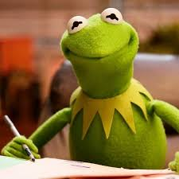

Das ist eine zentrierte Überschrift
Bei einer Website sollten wichtige Wörter fett oder kursiv geschrieben werden.
Auch ein
Zeilenumbruch wirkt Wunder
Das Internetsurfen funktioniert nur mit Links, bspw. Wikipedia
Auch Bilder einzubinden verschönert die Seite.
Eine Liste zum Einkaufen können wir auch angeben
- Milch
- Eier
- Brot